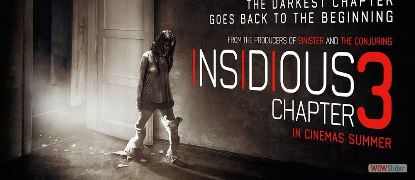
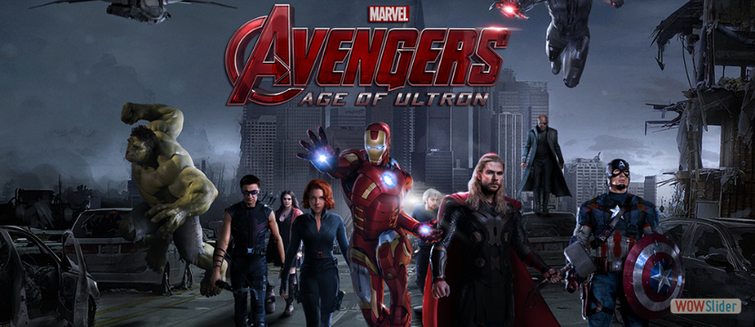
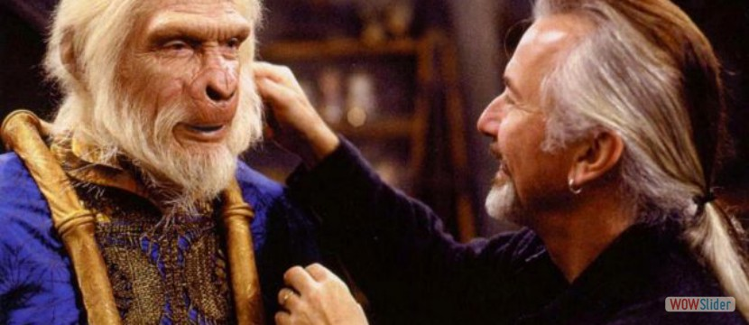
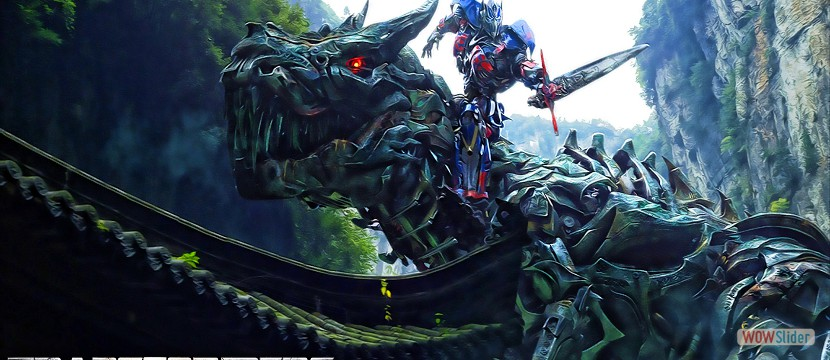

- La médium Elise Rainier (Lin Shaye) acepta a regañadientes utilizar su habilidad para contactar con los muertos . . .
- Cuando Tony Stark intenta reiniciar un programa para mantener la paz, las cosas salen mal y . . .
- ¿Son aficionados de películas como Star Wars, Un hombre lobo americano en Londres y Hombres de Negro? Entonces seguramente conocen . . .
- Transformers: la era de la extinción' nos sitúa cuatro años después del incidente de Chicago ocurrido durante la anterior película. Tanto los Autobots como los Decepticons han desaparecido de la Tierra, y . . .